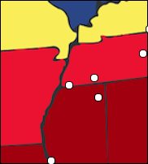
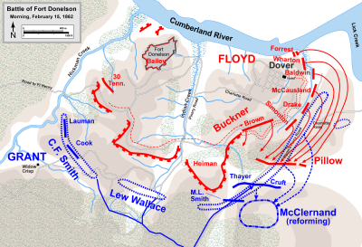
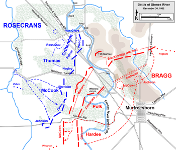
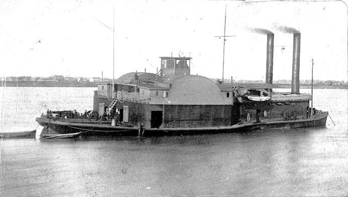
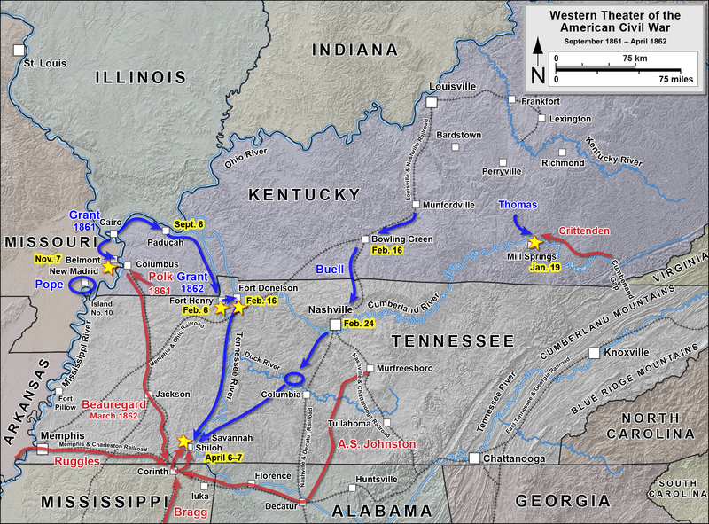
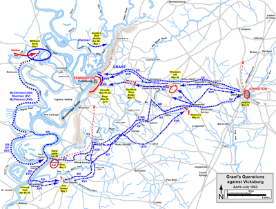

| Union | February 11-16, 1862 | Confederate |
|---|---|---|
| Ulysses S. Grant Andrew H. Foote | Commanders | John B. Floyd Gideon J. Pillow |
| 24,531 | Strength | 16,171 |
| 2,691 | Casualties and Losses | 13,846 |
Fort Henry, Tennessee, surrendered February 6, 1862. It had been key in defending the Tennessee River, and now the Union army could use it to transport troops and supplies. After the surrender, the Federals cut the railroad lines to the south, restricting movement of the Confederates. Grant's new position was unfortunate for the Confederates: it split their main forces. About 12,000 men were in Columbus, Kentucky, while another 22,000 were in Bowling Green, Kentucky. Grant and his 5,000 men were in the middle, defended by gunboats and with 45,000 reinforcements in Louisville. On February 7, at a council of war, the Confederates decided to abandon western Kentucky by moving their forces south of the Cumberland River in Nashville. Grant, on the other hand, was hoping to take over Fort Donelson, not attack the split armies.
On February 12, Grant and his troops travelled to Fort Donelson. A few minor skirmishes occurred. On February 14, the Confederate artillery did significant damage to the Union gunboats, forcing them to retreat downriver. Still, the Confederate leaders were skeptical about winning the battle for the fort and went forward with their plan to run. At dawn on February 15, the Rebels attacked the unprotected Union right flank. They succeeded in pushing the Federals back about a mile, but by nightfall the Union soldiers had reclaimed their previous spot. Nearly 1,000 total men were killed, while another 3,000 were lying injured on the battlefield. The Confederates accepted that they could not escape, and surrendered unconditionally.
This battle ensured that Kentucky would remain in the Union and opened up Tennessee for Federal advance.

| Union | December 31, 1862-January 2, 1863 | Confederate |
|---|---|---|
| William Rosecrans | Commanders | Braxton Bragg |
| 41,400 | Strength | 35,000 |
| 12,906 | Casualties and Losses | 11,739 |
After Bragg's defeat in Perryville, Kentucky, he and his troops marched to Murfreesboro, Tennessee to go into winter quarters. During a visit from Confederate President Jefferson Davis on December 16, Bragg was ordered to send 7,500 soldiers to help defend Vicksburg, the absence of whom would be deleterious to the Confederates' chance of winning this battle.
Rosecran's army followed Bragg all the way from Kentucky to Nashville, and went into camp on December 29 within hearing distance of the Rebels. On December 31, Bragg attacked the Union right flank, forcing them all the way to Nashville Pike, where they held for two days. Both armies rested on New Year's Day. On January 2, the Confederate forced the Federals back to McFadden's Ford, but, with the help of artillery, the Union soldiers managed to regain their position by nightfall. By January 5, the Confederates had retreated.
Of all the battles in the Civil War, this had the highest percentage of soldiers killed on both sides, about 30%.

| Union | April 6-7, 1862 | Confederate |
|---|---|---|
Ulysses S. Grant Don Carlos Buell | Commanders | Albert Sidney Johnston P. G. T. Beauregard |
| 66,812 | Strength | 44,699 |
| 13,047 | Casualties and Losses | 10,699 |
After losing Fort Donelson and Fort Henry in February 1862, Johnson established a base in Corinth, Mississippi in order to regroup his troops. It was a crucial railroad junction, connecting the Mississippi River Basin to Memphis, Tennessee and Richmond, Virginia. On March 14, Grant and his army left Fort Henry and headed south to Savannah, Tennessee. At the same time, Buell and most of his army were marching south from Nashville to Savannah. Grant spent his time waiting, training his soldiers with drills, without setting up any defensive measures, like entrenchments. He had one division set up farther to the north to protect the Union's right flank. On April 5, Buell's first division arrived, though the rest came only in time for the second day of the battle. On the Confederate side, on April 3, 44,699 men were sent to attack Grant before Buell and his reinforcements could arrive. Another 10,000 or so remained to protect Corinth.
Early in the morning of April 6, the Confederates attacked. The Federals were caught unaware, due to the fact they they had no patrols, giving the Rebels both a strategic and tactical advantage. Many Federals took a stand, however, developing a line of battle called the Hornet's Nest. The Confederates tried to carry the Hornet's Nest, but only with the help of massed artillery did they succeed in pushing it back. The Confederates surrounded the Union troops, capturing, killing, or wounding most. The Federals established a new line at Pittsburg Landing with the help of some of Buell's reinforcements. Through the night, fighting continued, but more and more of Buell's troops arrived. In the morning, some of Buell's soldiers pushed the line of battle forward two miles. Beauregard staged a counterattack, not realizing that he was now outnumbered. It worked at first, but the Union troops began to fight back, forcing the battle even further back. Beauregard again launched another counterattack, which stopped the Union advance but did not push back the line. Finally, Beauregard realized that he had too many casualties and couldn't win the battle. He retreated back to Corinth.
| Union | June 6, 1862 | Confederate |
|---|---|---|
Charles Henry Davis Charles Ellet, Jr. | Commanders | James E. Montgomery M. Jeff Thompson |
5 ironclads 2 rams | Strength | 8 rams |
| 1 | Casualties and Losses | 180 |
The First Battle of Memphis was a naval battle fought on the Mississippi directly above Memphis, Tennessee. While the boats of the Confederates were roughly equal in number, they were of a much lesser quality. Each had only one or two guns, and their primary weapon was a reinforced pow, good for ramming things. They also featured a double layer of walls for all internal spaces, consisting of timber, iron, and cotton. This earned them the nickname "cottonclads."
The Federals attacked Memphis at about 5:30 a.m. on April 6. During the 90-minute battle, all but one of the Confederate ships were either sunken or captured. The city of Memphis surrendered before noon.
Memphis was an important economic and commercial center along the Mississippi. It was one of only two purely naval battles in the Civil War.

| Union | April 29-May 30, 1862 | Confederate |
|---|---|---|
| Henry Halleck | Commanders | P. G. T. Beauregard |
| 120,000 | Strength | 65,000 |
| 1,000 | Casualties and Losses | 1,000 |
After the Battle of Shiloh, Halleck got together three Union armies to attack Corinth, Mississippi. He proceeded carefully, cautious after the Battle of Shiloh. By May 25, he was in position to lay siege to Corinth. The Confederates were in a bad position: morale was low, they were outnumbered nearly two to one, and the water was bad. Diseases like typhus and dysentery killed almost as many soldiers as the battle of Shiloh. At a council of war, the Confederate officers concluded that they could not hold the city.
Over the course of several weeks, the Federals took over many small areas near Corinth: the town of Farmington, the Russell house, the Widow Surratt Farm, Bridge Creek, and Surratt Hill. On the night of May 29, Beauregard evacuated his soldiers to Tulepo. They had fooled the Federals: their drummers and buglers played, men were given three-day rations, and they kept the fires burning. When the Union soldiers attacked, they found camp empty, the soldiers gone.
In October 1862, Confederate General Earl Van Dorn tried to retake the city, but was defeated in the Second Battle of Corinth.

| Union | May 18-July 4, 1863 | Confederate |
|---|---|---|
| Ulysses S. Grant | Commanders | John C. Pemberton |
| 77,000 | Strength | 33,000 |
| 4,835 | Casualties and Losses | 3,202 killed/wounded 29,495 surrendered |
On May 14, 1863, Grant captured Jackson, Mississippi, forcing Pemberton westward. While he attempted to stop the Federals from advancing at Champion Hill and again at Black River Bridge, Pemberton knew that troops under Major General William T Sherman were preparing to flank him from the north. Pemberton was forced to retreat to the fortified city of Vicksburg. Over 75% of his troops had been lost at the previous battles, and he was ordered by General Joseph E. Johnston to abandon the city and save the rest. This he would not do. Pemberton was originally a Northerner, and he was afraid of what the public would say if he abandoned Vicksburg.
Grant's idea was to overwhelm the Confederate troops with an attack before they could get organized. On May 19, he ordered several brigades to attack the Stockade Redan. They were quickly and relatively easily turned away by gunfire and hand grenades, which greatly damaged the Federal morale. Grant didn't want to have to resort to a siege, so he planned another attack for the 22, more carefully thought out this time. Everyone thought that Vicksburg would fall. All night and all morning, the Union gunboats fired, greatly damaging the Confederate civilian morale. At 10 a.m., the Federal forces advanced toward the front of the city. Two out of the three main colunms had failed to breach the city, and by 11 a.m. it was obvious that the Union army would not break through. Grant resigned himself to a siege. On July 4, the Confederates surrendered.
The loss of this city split the Confederacy in half geographically. Grant's success helped him to later become the General-in-Chief of the Union army.
